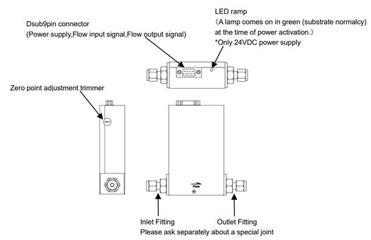
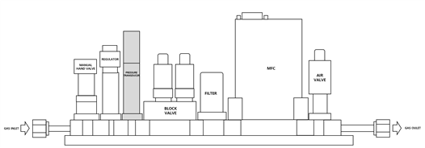

조치 방법:
1)
①
MFC Zero Point 점검
MFC의 구조

ⓐ
Tube내부를 펌핑하여 고진공 상태로 만든다. (VG13 < 1Torr)
ⓑ
Gas Line의 내부를 N2 Gas로 퍼지를 진행한다.
ⓒ
만약 MFC 전원을 다시 연결한 경우 5분이상(30분 권장) 가스의 흐름 없이 그대
로 두십시오. 웜업을 하지 않을 시 유량 정확도가 저하된다.
ⓓ
영점 보정 이전에 가스 흐름이 차단된 상태에서의 유량을 확인한다. 가스 흐름이
정지된 상태에서 1SLM 이상의 값이 나타나면 Zero Cal이 필요한 상태이다.(사용
자 조건에 따라 Zero Point를 다르게 가져감.) 그리고 가스를 흘려서 유량상태를
점검 한다.
ⓔ
영점 보정 기능을 사용할 때, 본체 내부의 압력을 가할 경우 올바른 영점 보정이
수행되지 않는다. 또한, 센서의 안정을 고려하여 가스 공급이 중단한 후 최소 1분
이상 경과한 뒤 영점 보정 기능을 사용하는 것을 권장 한다.
ⓕ
영점 조정 버튼을 눌러 준다.
ⓖ
영점 조정 이후 가스가 차단된 상태에서의 유량과 가스를 흔린 상태에서의 유량
을 이전과 비교한다.
ⓗ
영점 조정은 가스의 실제 유량에 변화를 줄 수 있으므로 장기간 사용 중에는 권
장하지 않으며, 최초 셋업 이후 실시하도록 한다.
②
RF Noise 점검
ⓐ
Tube 내부의 분위기를 RF Plasma가 On될 수 있는 환경으로 만들어 준다.
ⓑ
Tube 내부 진공 상태 확인한다. ( VG13 < 1Torr )
ⓒ
DCS MFC N2 가스를 흘려준다.
ⓓ
RF ON을 하여 DCS MFC 유량이 변화가 있는지를 점검한다.
ⓔ
유량변화가 생기는 경우 접지 추가 대책, MFC 교체 등의 추가 작업 진행 한다.
2)
MFC 이외 점검 :
①
가스 압력 점검
GAS IGS(Integrated Gas Sytem)의 구성

ⓐ
그림의 가스라인 구성에서 회색 음영 부분이 라인의 압력을 확인하는
PT(Pressure Transducer)센서이며, 압력의 상태를 확인하기 위해서는 먼저 가스
가 차단된 상태에서 PT 센서의 값을 확인한다.
ⓑ
N2 가스를 이용하여 가스를 흘릴 때 PT 센서의 압력을 확인하고, 정체시와 흘릴
시의 압력상태를 확인한다.
ⓒ
가스가 정체시에 입력이 비정상적으로 올라간 경우는 REGULATOR의 고장에 의
한 현상으로 REGULATOR를 교체 해야한다.
ⓓ
가스의 정체 혹은 흘릴때의 상태가 셋업시 기준과 다른 경우는 가스 공급단에서
의 변화를 확인한다.
ⓔ
만약 가스 공급단에서 문제가 없다면, PT 센서를 확인하여 교체 혹은 점검한다.